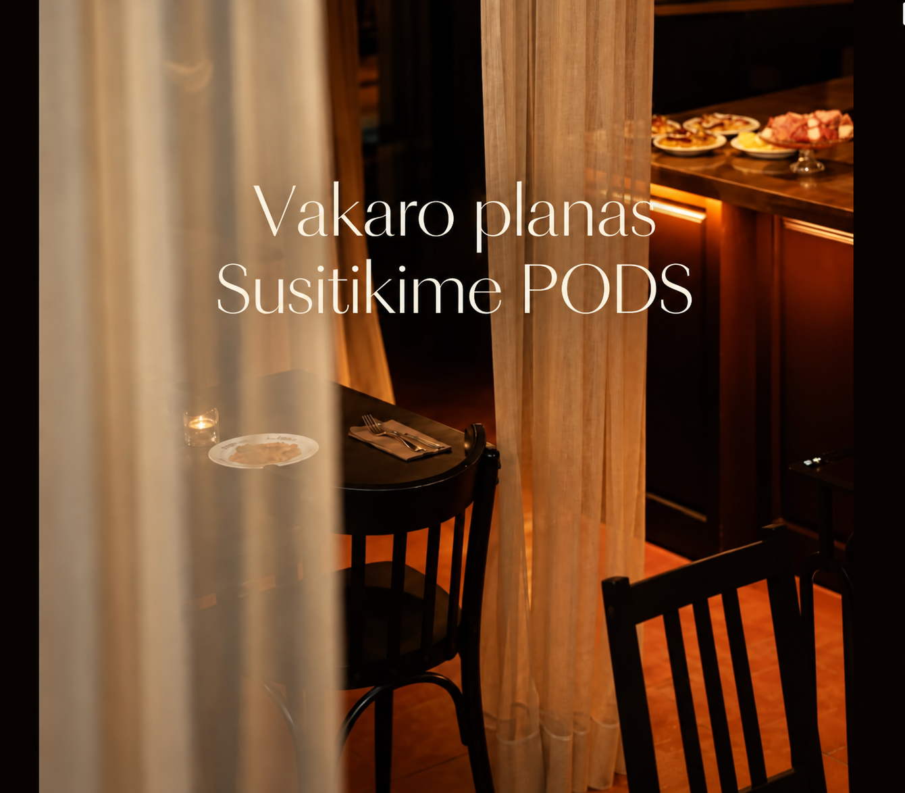
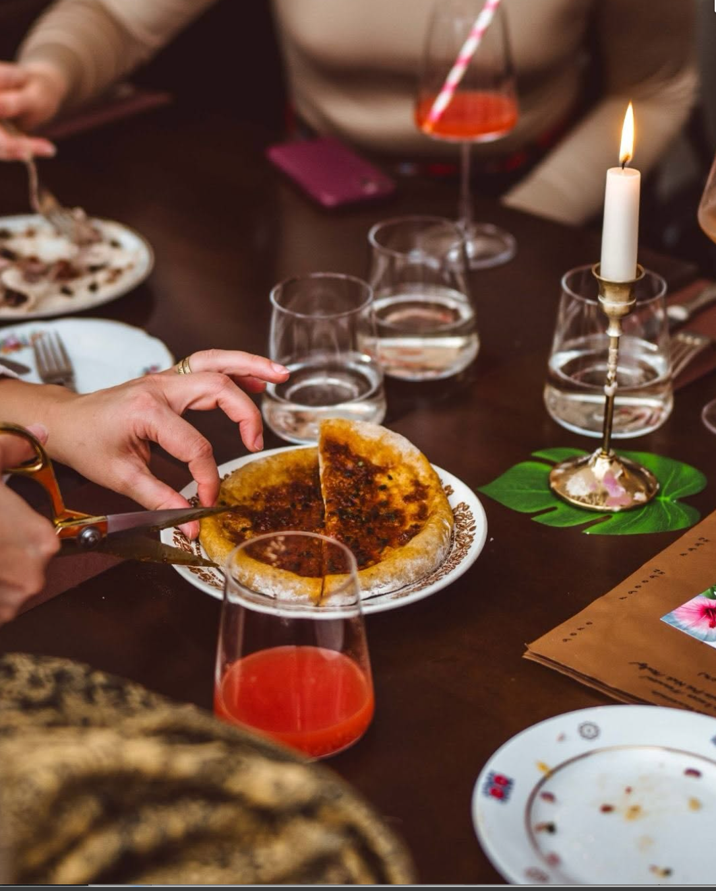
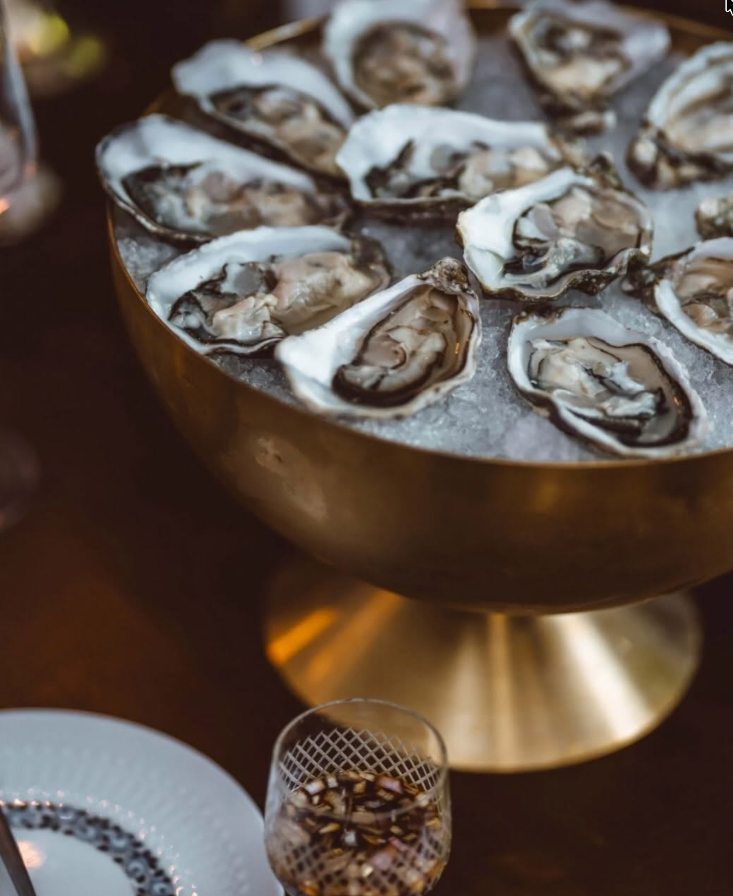

Place of delicious sips · Vilnius
Šis vakaras
turi jūsų vardą.
Ant taurės - jūsų vardas.
Prie stalo - jūsų žmonės.
Visa kita palikite mums.

Maža detalė. Asmeniškas vakaras.Malonu susipažinti
Vyno baras.
Su asmeniškumu.
Pradėkime nuo vardo. Užrašome jį ant jūsų taurės - taip pasitinkame svečius PODS.
Čia susitinka atrinkti vynai, maistas, kuriuo norisi dalintis, ir laikas pokalbiams. Užsukite po darbo, pasimatymui ar vakarui, kuriam dar nesugalvojote plano.
Pasilikite staliuką vakaruiGera taurė. Geras kąsnis.
Skoniai, kurie
randa bendrą kalbą.
Rinkitės pažįstamą vyną arba leiskitės į naują pažintį. Pasakykite, ką mėgstate - kartu atrasime, kas tiks šiam vakarui.
Prie taurės - užkandžiai, kuriais norisi dalintis. Daugiau skonių ant stalo, daugiau progų pabūti kartu.
Kas naujo PODSVynas · Užkandžiai · DegustacijosPasimatymams. Susitikimams. Tiesiog vakarui.
Planų gali nebūti.
Vieta jau yra.
Sustokite trumpam. Atsisėskite patogiai.
Pokalbis tik prasideda.
Iš arčiau
Vakaro
detalės.
Jaukus kampas. Gera taurė.
Laikas, kurį norisi pratęsti.


Laukiame jūsų
Užsukite.
Susipažinsime.
Totorių g. 22, Vilnius
Pačiame senamiestyje